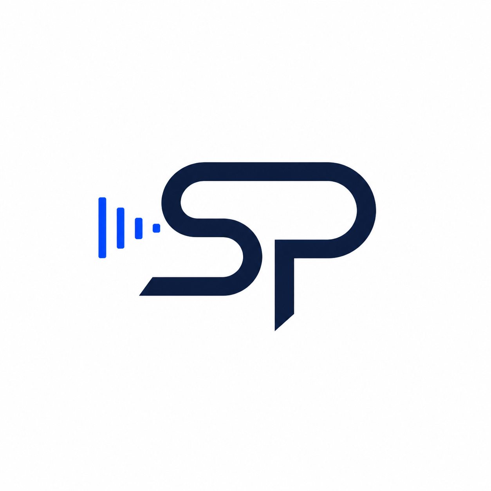

Final Logo
The final logo uses the initials SP inside a geometric shield form. The design connects personal identity with technology, silence, focus, and control over sound. I selected Prompt 3 as the final version because it avoids the earlier circular audio logo structure and communicates silence, focus, and controlled sound through a more distinctive geometric form. This version works well as a personal mark for a technology focused website because it feels modern, balanced, and visually connected to noise cancelling technology.
Logo Versions
I generated three possible logo directions before choosing the final version. Each version uses the initials SP, dark navy, white space, and a small electric blue accent, but each one communicates the idea of sound control in a different visual form.
Option 1
This version uses a bold SP monogram with a small blue accent. It is simple and direct, but it feels less connected to sound technology than the final version.
Option 2

This version uses fading sound bars beside the SP monogram. It clearly suggests sound reduction, but it is closer to a typical audio logo.
Final Version
This version combines the SP monogram with a shield like form and a small sound accent. It feels more distinctive, balanced, and professional.
Final Logo Sizes
The logo was tested at different sizes to make sure it remains readable on a website. The middle version is shown in black and white to test whether the design still works without color.
Small
Small website icon size
Medium Black and White
Black and white test version
Large
Large display version
AI Tool and Prompts
The logos were created with ChatGPT image generation. I used the following prompts to test different visual approaches before selecting the final logo.
Prompt 1
Create a minimalist personal logo for Seongmin Park using the initials SP. The logo should represent noise cancelling headphones, silence, focus, and control over sound, but it must look different from a circular SP logo with sound waves on both sides. Use a clean geometric SP monogram with a subtle shield shape or quiet zone shape around it. Add one small electric blue accent that suggests sound being reduced or controlled. Use dark navy and white as the main colors. The design should feel modern, academic, professional, and suitable for a technology website. Make it readable at small sizes. No brand names, no Sony logo, no YouTube logo, no MKBHD logo, no realistic headphone image, no slogan, and no extra text. Clean white background and also suitable for transparent background.
Prompt 2
Design a minimalist personal logo for Seongmin Park with the initials SP. The concept should show sound being reduced into silence. Avoid using a full circle border and avoid placing equal sound waves on both sides like a standard audio logo. Create a simple SP monogram where one side suggests incoming sound lines and the other side fades into a calm empty space. Use dark navy for the initials and a small electric blue accent for the fading sound element. The logo should communicate focus, silence, personal control, and modern technology. Use a clean geometric sans serif style. Keep the design simple, balanced, and professional. No realistic headphones, no existing brand logos, no YouTube symbols, no MKBHD reference, no long text, and no slogan. White background, square composition, enough padding.
Prompt 3
Create a modern minimalist logo for Seongmin Park using the initials SP. The logo should connect to a visual rhetoric website about noise cancelling headphones, but it should not look like a typical sound wave logo. Build the SP letters with clean geometric negative space. Add a small abstract silence symbol, such as a broken sound line, a muted signal mark, or a calm focus frame. Do not use a circular border around the whole logo. Use dark navy, white, and a small electric blue accent. The design should feel premium, quiet, controlled, and technology focused. It must be clear at small sizes and work in both color and black and white. No brand names, no Sony logo, no YouTube logo, no MKBHD logo, no realistic product image, no slogan, and no extra text.
Denotation and Connotation
At the denotative level, the final logo shows the letters SP, a geometric shield like outline, a dark navy color scheme, white negative space, and a small electric blue sound accent. These are the visible elements that can be directly identified.
At the connotative level, the logo suggests focus, protection, quiet control, and modern technology. The shield like form implies a protected sound environment, while the small blue accent suggests sound being managed rather than amplified. This makes the logo appropriate for a website about noise cancelling headphones and visual rhetoric.